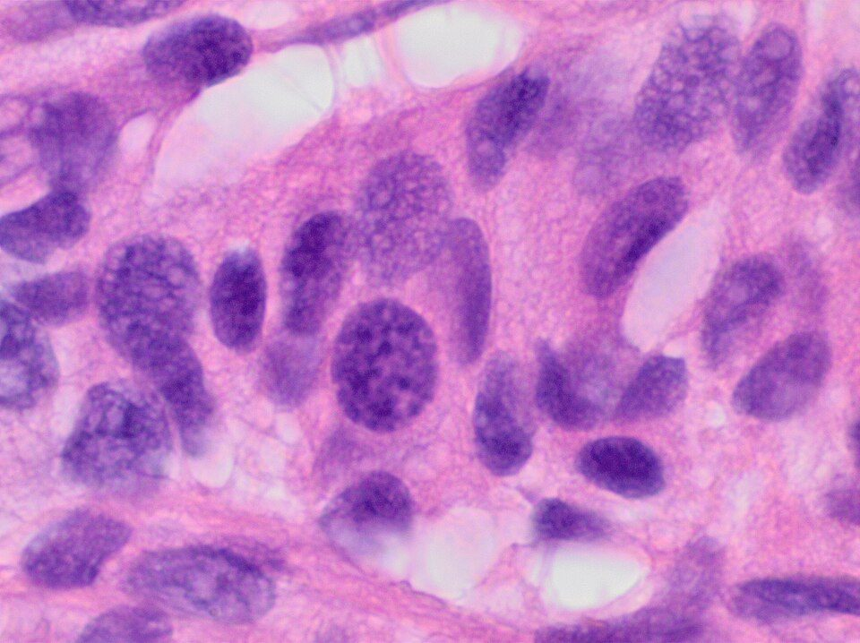

Información divulgativa. No sustituye la valoración de tu equipo médico ni sirve para decidir un tratamiento.


En resumen
| Frecuencia | 1-2 % de los tumores de páncreas; en aumento por su detección casual |
| Tipos | No funcionantes (la mayoría) y funcionantes: insulinoma, gastrinoma, glucagonoma, VIPoma, somatostatinoma |
| Herencia | MEN1, von Hippel-Lindau, neurofibromatosis tipo 1, esclerosis tuberosa |
| Tratamiento | Cirugía; análogos de somatostatina, everolimus, sunitinib, lutecio-177, quimioterapia |
| Pronóstico | Mucho mejor que el adenocarcinoma: a menudo años o décadas |
Tipos
No funcionantes (60-90 %): no producen hormonas que den síntomas; se detectan por casualidad o por su tamaño.
Funcionantes, según la hormona:
| Tumor | Hormona | Síntomas |
|---|---|---|
| Insulinoma | Insulina | Bajadas de azúcar (sudor, confusión, desmayos) en ayunas; casi siempre benigno |
| Gastrinoma | Gastrina | Úlceras múltiples y diarrea (síndrome de Zollinger-Ellison) |
| Glucagonoma | Glucagón | Diabetes, erupción cutánea migratoria, pérdida de peso |
| VIPoma | VIP | Diarrea acuosa masiva, potasio bajo |
| Somatostatinoma | Somatostatina | Diabetes, cálculos biliares, diarrea grasa |
Diagnóstico
TC, resonancia, ecoendoscopia con biopsia, PET con galio-68 DOTATATE (o con exendina en el insulinoma), análisis de hormonas y cromogranina A, y Ki-67 para el grado. Valorar estudio genético, sobre todo en jóvenes o con varios tumores.
Tratamiento
- Vigilancia en tumores no funcionantes de menos de 2 cm bien diferenciados (estudio ASPEN).
- Cirugía: enucleación, pancreatectomía distal o Whipple según la localización.
- Enfermedad avanzada: análogos de somatostatina, everolimus, sunitinib, cabozantinib (ensayo CABINET), capecitabina con temozolomida (muy eficaz en los pancreáticos), y lutecio-177 DOTATATE.
- Control de los síntomas hormonales: diazóxido en el insulinoma, inhibidores de la bomba de protones a dosis altas en el gastrinoma.
Pronóstico
La supervivencia a cinco años supera el 90 % en los localizados operados, y muchos pacientes con metástasis viven más de 10 años. Steve Jobs tuvo un tumor neuroendocrino de páncreas, no un adenocarcinoma.
Ver también: Cáncer de páncreas, Tumores neuroendocrinos digestivos, Feocromocitoma y paraganglioma.
Historia · Medicapedia
Tumores neuroendocrinos de páncreas en la historia de la medicina
Cómo se descubrió, quién lo investigó y cómo cambió su tratamiento a lo largo de los siglos, contado en Medicapedia, nuestra web hermana de historia de la medicina.
Leer la historia en Medicapedia ↗Fuentes
- Pavel M, et al. Gastroenteropancreatic neuroendocrine neoplasms: ESMO Clinical Practice Guidelines. Ann Oncol. 2020;31:844-860. doi:10.1016/j.annonc.2020.03.304
- Raymond E, et al. Sunitinib malate for the treatment of pancreatic neuroendocrine tumors. N Engl J Med. 2011;364:501-513. doi:10.1056/NEJMoa1003825
- Yao JC, et al. Everolimus for advanced pancreatic neuroendocrine tumors (RADIANT-3). N Engl J Med. 2011;364:514-523. doi:10.1056/NEJMoa1009290
- Chan JA, et al. Phase 3 trial of cabozantinib to treat advanced neuroendocrine tumors (CABINET). N Engl J Med. 2025.
Guías y documentos recientes (2024-2026)
- SEOM y REDECAN. Las cifras del cáncer en España 2026. Madrid: SEOM; 2026. seom.org
Fuentes revisadas y actualizadas en noviembre de 2026.